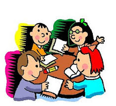

IQ Papelería
IQ Papelería

🎒 Las 5 tendencias en organización escolar que arrasan en 2025
10 de junio, 2025 Escolar
Este año los estudiantes están dejando atrás las mochilas abarrotadas y están adoptando sistemas modulares, agendas digitales híbridas y mochilas con puerto USB. ¿Quieres saber cuáles son las 5 claves para un regreso a clases ordenado y con estilo?
1. Agendas híbridas: Combinan papel y app. Marcas como Rocketbook permiten escribir y digitalizar al instante. En IQ ya las tenemos.
2. Mochilas con compartimentos modulares: Las nuevas Swissgear traen bolsas internas removibles para cables, lunch y laptop.
3. Kits de papelería minimalista: Plumas multifunción, cuadernos reutilizables y sets de oficina portátiles que caben en un estuche.
4. Etiquetas inteligentes: Con códigos QR que al escanear muestran el horario del alumno o datos de contacto en caso de pérdida.
5. Colores neón y pastel: La moda retro sigue dominando; los tonos lavanda, menta y amarillo pastel son los más buscados.
Visítanos en cualquiera de nuestras sucursales para armar tu kit de regreso a clases con lo último en tendencias.
🌱 Papelería ecológica: la nueva ola verde que está cambiando la industria
5 de junio, 2025 Noticias IQ
Cada vez más marcas están apostando por materiales reciclados, biodegradables y procesos carbono neutro. En IQ Papelerías nos sumamos a esta tendencia con una línea exclusiva de productos sustentables. Te contamos de qué se trata.
Cuadernos de papel reciclado: Fabricados con 100% fibra post-consumo, con certificación FSC. Ya disponibles en nuestras sucursales.
Plumas biodegradables: Hechas a base de almidón de maíz. Se descomponen en menos de 2 años.
Empaques cero plástico: Varias marcas están eliminando los blísteres y usando cartón reciclado.
IQ Green Pack: Nuestro paquete escolar armado con productos ecológicos. Perfecto para escuelas que fomentan el cuidado del medio ambiente.
Además, por cada compra de un producto verde, IQ dona un cuaderno a comunidades escolares en Querétaro. ¡Súmate!

🖨️ Adiós a las filas: así funciona la impresión sin contacto en IQ Papelerías
1 de junio, 2025 Servicios
Imagina enviar tus archivos por correo electrónico mientras vas en el camión y encontrar tus impresiones listas al llegar a la sucursal. Eso ya es una realidad en nuestras dos sucursales. Te explicamos cómo aprovechar este servicio.
Paso 1: Envía tu archivo PDF a impresion@iqpapelerias.com.mx indicando el número de copias, tamaño y si es a color o blanco y negro.
Paso 2: Recibirás un código de confirmación con el costo exacto.
Paso 3: Acude a la sucursal que elijas (Juriquilla o Plaza Atelier), proporciona tu código, paga y recoge tus impresiones. Sin formatear USB, sin instalar drivers.
Horario extendido: De lunes a viernes hasta las 9:00 pm, para que ni los noctámbulos se queden sin su proyecto.
Este sistema ya representa el 40% de nuestras impresiones diarias y los clientes lo califican como "una salvación".
Categorías del blog
Artículos recientes
© 2025 IQ Papelería – Querétaro, Qro. | Tel: 442 123 4567